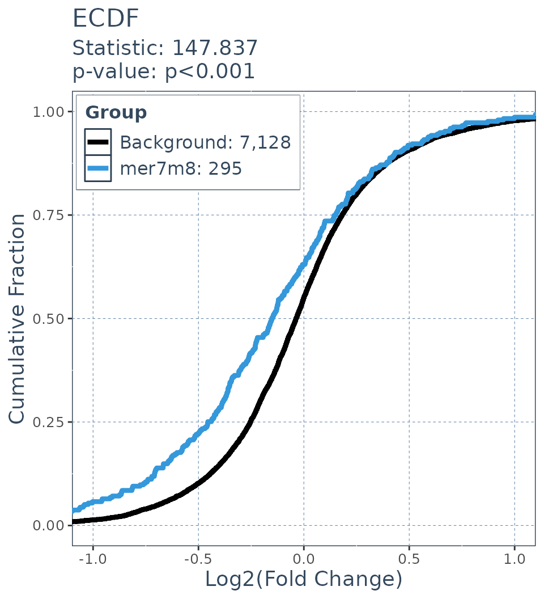
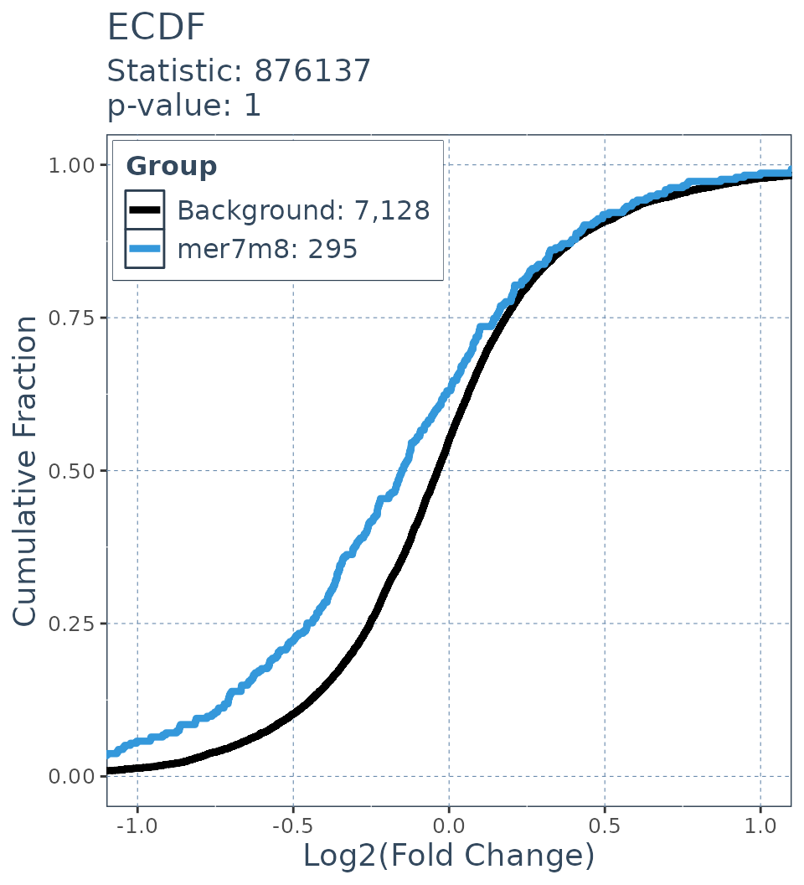

SeedMatchR ECDF Statistics
Tareian Cazares
SeedMatchR_ECDF_statistics.Rmd
library(SeedMatchR)Examples of ECDF statisics
There are a variety of approaches that can be used to calculate the difference between two distributions. Historically the KS Dstat has been used for miRNA related studies, but we have also explored other statistics such as the Wasserstein. The differences are outlined in the TwoSamples package.
Example workflow
# siRNA sequence of interest targeting a 23 bp region of the Ttr gene
guide.seq = "UUAUAGAGCAAGAACACUGUUUU"Load example DESeq2 data
get_example_data("sirna")
#> Example data directory being created at: /home/runner/.local/share/R/SeedMatchR
sirna.data = load_example_data("sirna")
res <- sirna.data$Schlegel_2022_Ttr_D1_30mkg
res = filter_res(res)Load Annotations
We will next load the annotations for rat. This step is further described in the vignette.
# Load the species specific annotation database object
annodb = load_annotations(reference.name = "rnor6", canonical = FALSE, min.feature.width = 8, longest.utr = T)Search features for seed matches
res = SeedMatchR(res = res,
seqs = annodb$seqs,
sequence = guide.seq,
seed.name = "mer7m8")
head(res, 2)
#> gene_id baseMean log2FoldChange lfcSE stat pvalue
#> 1 ENSRNOG00000016275 2138.0945 -8.164615 NA -23.61818 2.507268e-123
#> 2 ENSRNOG00000000127 437.6342 -1.346927 0.1068629 -12.60425 2.000712e-36
#> padj symbol mer7m8
#> 1 3.405371e-119 Ttr 1
#> 2 1.358683e-32 Kpna6 0Extract gene matches for each criteria and their fold changes
# Gene set 1
mer7m8.list = res$gene_id[res$mer7m8 >= 1]
# Gene set 2
background.list = res$gene_id[res$mer7m8 == 0]
# Gene set 1 FC
mer7m8.FC = res$log2FoldChange[res$mer7m8 >= 1]
# Gene set 2 FC
background.FC = res$log2FoldChange[res$mer7m8 == 0]KS statistic
ecdf.results = deseq_fc_ecdf(res,
list("Background" = background.list,
"mer7m8" = mer7m8.list),
stats_test = "KS")
ecdf.results$plotWasserstein statistic
ecdf.results = deseq_fc_ecdf(res,
list("Background" = background.list,
"mer7m8" = mer7m8.list),
stats_test = "Wass")
ecdf.results$plotDTS
ecdf.results = deseq_fc_ecdf(res,
list("Background" = background.list,
"mer7m8" = mer7m8.list),
stats_test = "DTS"
)
#> Warning in scored$statistic <- scored[[1]]: Coercing LHS to a list
ecdf.results$plot
Wilcoxen statistic
ecdf.results = deseq_fc_ecdf(res,
list("Background" = background.list,
"mer7m8" = mer7m8.list),
stats_test = "Wilcoxen")
ecdf.results$plot